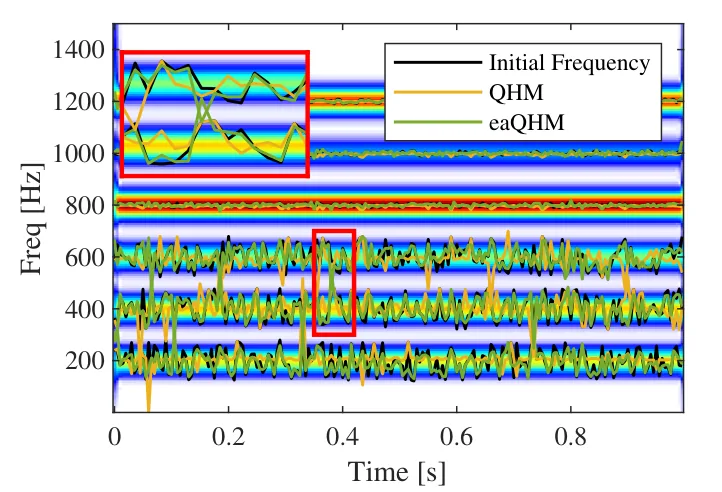
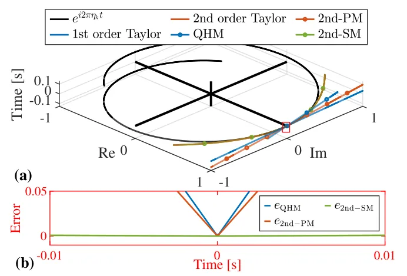
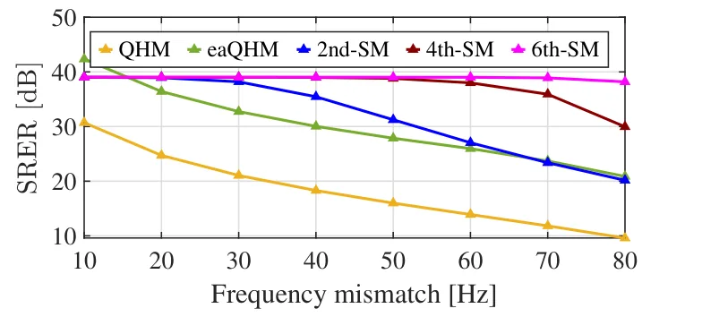

O Problema da Precisão na Modelagem Sinusoidal
Sinais sinusoidais são onipresentes em processamento de sinais, constituindo a base para análise de áudio, radar e monitoramento de vibrações. Em aplicações práticas, um sinal observado x(t) é frequentemente modelado como uma soma de componentes sinusoidais complexos mais um termo de ruído. A qualidade da síntese ou decomposição desse sinal depende diretamente da precisão com que extraímos parâmetros como amplitude instantânea, fase e frequência instantânea. Se esses parâmetros forem estimados com erro, a reconstrução do sinal original será imperfeita, introduzindo artefatos audíveis ou visíveis.
Historicamente, métodos baseados em espectrogramas, como a Transformada de Fourier de Curto Prazo (STFT), foram amplamente utilizados. No entanto, eles enfrentam a limitação fundamental do princípio da incerteza: não é possível obter alta resolução simultânea no tempo e na frequência. Técnicas pós-processamento, como o reassessment e a transformada de synchrosqueezing (SST), tentam mitigar isso, mas ainda sofrem com a resolução do eixo de frequência, que é limitada pela taxa de amostragem e pelo número de pontos da FFT. Para sinais de alta taxa de amostragem, como áudio de fala, aumentar o tamanho da FFT torna-se computacionalmente inviável.
Diante dessas limitações, métodos paramétricos ganharam destaque, com foco na Extração de Parâmetros de Harmônicos Quase (QHM - Quasi-Harmonic Modeling). O QHM e suas extensões (aQHM e eaQHM) permitem refinar estimativas de frequência enquanto extraem amplitudes. A premissa é que, conhecendo a frequência, a estimativa de amplitude é linear e tratável. Contudo, na prática, há sempre um erro de frequência (frequency mismatch) entre a frequência estimada inicial e a verdadeira. Os métodos QHM tradicionais tratam esse erro de forma linear, o que se mostra insuficiente quando o descompasso é significativo, limitando a precisão final do modelo.

Revisando as Limitações do QHM
Os autores revisitam o método QHM sob a perspectiva dos erros de mismatch de frequência. A análise revela que o desempenho do QHM é essencialmente restringido pela ordem do modelo. Como o QHM é fundamentalmente um modelo linear, ele é incapaz de capturar variações de ordem superior na frequência. Isso significa que, ao aproximar a relação entre a frequência verdadeira e a observada, o modelo linear ignora termos de ordem superior que podem ser significativos, levando a uma precisão subótima na estimativa de parâmetros.
Em cenários onde o erro de frequência é pequeno, a aproximação linear pode ser aceitável. Porém, em situações de ruído aditivo ou perturbações de frequência mais intensas, a linearidade se torna uma fraqueza crítica. O erro de estimação não diminui rapidamente com o aumento da ordem do modelo linear, pois a estrutura do modelo não permite representar a não-linearidade inerente à modulação de fase do sinal. Isso explica por que extensões anteriores, como o eaQHM, ainda apresentam limitações na extração e correção de parâmetros em condições adversas.
A Proposta: Modelagem Sinusoidal de Alta Ordem
Para superar essa limitação, os autores propõem um framework de modelagem de alta ordem. A ideia central é aumentar a ordem do modelo para permitir uma aproximação mais precisa dos componentes do sinal. Em vez de depender de uma expansão linear do erro de frequência, o novo modelo utiliza uma expansão de Taylor de ordem N. Isso permite capturar variações mais complexas na fase e na amplitude do sinal, melhorando a capacidade expressiva do modelo frente a mismatch de frequências.
O modelo proposto, chamado High-Order Sinusoidal Model (SM), reformula o problema de estimação de parâmetros. A função de custo é definida como a diferença quadrática entre o sinal observado e a reconstrução baseada no modelo de alta ordem. Diferentemente do QHM, onde a estimação de amplitude é linear dada a frequência, aqui a função de custo torna-se não-linear em relação aos parâmetros de frequência (representados pela variável b na notação dos autores). Essa não-linearidade é o que permite ao modelo ajustar-se melhor à curvatura real do sinal no domínio tempo-frequência.

Otimização via Levenberg-Marquardt
Com a função de custo não-linear definida, o problema de estimação de parâmetros se torna um problema de minimização não-linear. Os autores caracterizam qualitativamente esse problema e empregam o algoritmo Levenberg-Marquardt (LM) para a estimação. O LM é uma técnica robusta que combina os métodos de descida de gradiente e de Gauss-Newton, adaptando-se dinamicamente para garantir convergência estável.
A vantagem do uso do LM reside na sua eficiência. Ao contrário de métodos genéricos de otimização não-linear, o LM explora a estrutura residual do problema, permitindo uma adaptação adaptativa dos parâmetros com menos iterações. Isso resulta em uma estimação mais rápida e precisa. O algoritmo busca o par de parâmetros (amplitude complexa a e termo de frequência b) que minimiza a energia do erro, projetando o sinal observado no subespaço gerado pelas funções base do modelo de alta ordem.
Matematicamente, a estimação da amplitude a pode ser resolvida analiticamente para um dado b, reduzindo o problema a uma otimização unidimensional em b. Isso simplifica a busca, embora a função de custo em b permaneça não-linear devido à estrutura exponencial-polinomial das funções base. A otimização final de b é realizada pelo LM, garantindo que o erro de estimação seja minimizado de forma eficiente.
Análise de Erro e Convergência
Os autores fornecem uma análise teórica da precisão da estimação. Através da linearização da função de custo em torno dos valores verdadeiros, demonstram que o erro de estimação da amplitude (εA) é limitado pelo termo de resto de Lagrange da expansão de Taylor. Esse termo de resto decresce à medida que a ordem N do modelo aumenta. Em termos práticos, isso significa que, ao aumentar a ordem do modelo, o erro de estimação da amplitude tende a zero, desde que o sinal seja suficientemente suave e a ordem seja escolhida adequadamente.
A análise mostra que a precisão não é apenas qualitativamente melhor, mas quantitativamente superior. O erro de amplitude é proporcional ao termo de resto, que depende da potência da frequência de mismatch elevada à ordem N+1, dividida por fatorial. Para ordens mais altas, esse termo cai drasticamente, mesmo para mismatch moderados. Isso valida a escolha de um modelo de ordem superior como a solução para o problema de limitação dos métodos lineares.

Resultados Experimentais
A eficácia do método foi avaliada através de estudos de simulação e experimentos com sinais de fala. Os experimentos compararam o modelo de alta ordem (4th-SM) com QHM, eaQHM e outras técnicas de alta resolução. As métricas utilizadas incluíram Lspec (espectral), SRER (Signal-to-Residual Error Ratio) e RTF (Relative Time Factor).
Nos testes de simulação, o 4th-SM demonstrou superioridade clara na refinamento de frequência e extração de parâmetros. Sob condições de ruído aditivo, o modelo mostrou robustez, mantendo baixos erros de estimação enquanto métodos anteriores apresentavam degradação significativa. A figura 10 ilustra que, sob diferentes condições de mismatch de frequência, o erro quadrático médio (RMSE) do 4th-SM é consistentemente menor.
Em sinais de fala, a melhoria na reconstrução foi evidente. O SRER do 4th-SM foi de 12.7 dB, superando o eaQHM (11.5 dB) e o QHM (8.8 dB). Isso indica que a reconstrução do sinal é mais fiel ao original, com menos resíduos de erro. Além disso, o tempo de processamento foi menor que o do eaQHM, graças à eficiência do algoritmo LM em convergir com menos iterações.
Limitações e Considerações Finais
Apesar dos avanços, o paper não aborda a complexidade computacional para ordens extremamente altas. Embora o LM seja eficiente, a avaliação da função de custo e de suas derivadas em ordens muito altas pode tornar-se custosa para sinais de duração muito longa. Além disso, a escolha da ordem N ótima pode depender das características específicas do sinal, exigindo algum ajuste ou heurística.
O método é focado em sinais com componentes sinusoidais bem definidos. Sinais com ruído não-gaussiano intenso ou componentes não-sinusoidais complexas podem não se beneficiar da mesma forma. Os autores destacam a promessa do método para análise fina de sinais, mas reconhecem que a aplicação em tempo real de alta latência ainda requer otimizações adicionais.
Em resumo, o paper apresenta uma contribuição sólida para o campo de processamento de sinais, corrigindo uma falha fundamental nos modelos lineares tradicionais. Ao introduzir a não-linearidade controlada via expansão de Taylor de alta ordem e resolvê-la com LM, os autores alcançam uma precisão de estimação que era anteriormente inatingível com métodos lineares, abrindo caminho para aplicações mais exigentes em áudio e radar.
O que fica
- Métodos lineares como QHM falham ao capturar variações de ordem superior na frequência, gerando erros sistemáticos.
- A proposta substitui a aproximação linear por uma expansão de Taylor de alta ordem, modelando o erro de forma mais fiel.
- O algoritmo Levenberg-Marquardt resolve o problema não-linear de forma eficiente, convergindo mais rápido que extensões anteriores.
- A precisão melhora significativamente em sinais com ruído e grandes descompassos de frequência, sem custo computacional proibitivo.
Paper original: High-Order Sinusoidal Modeling for Precise Parameter Refinement
Comentários
Nenhum comentário ainda. Seja o primeiro.